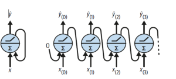
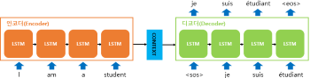
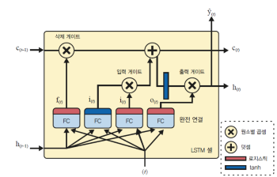
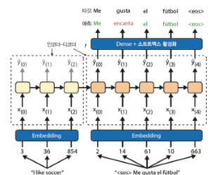
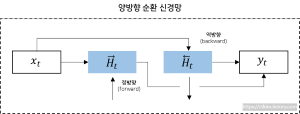
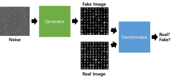
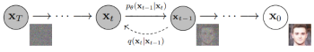

RNN (순환 신경망)
입력과 출력을 시퀀스 단위로 처리하는 모델 피드포워드 신경망과 유사하지만 순환하는 연결도 있다는게 차이점

시퀀스: 문장 같은 단어가 나열된 것 (쉽게말해서 문장을 처리하기위한 모델이다)셀: RNN 에서 은닉층에서 함수를 통해 결과를 내보내는 역할- RNN은 입력을 받아 출력으로 나온 값을 다시 입력으로 넣는
순환구조를 가지고 있다
- RNN은 입력을 받아 출력으로 나온 값을 다시 입력으로 넣는
메모리 셀: 이전 셀의 값을 기억하는 역할을 하는 셀- 현재 출력 데이터는 다음 노드에 입력이되는 약간 연결리스트 구조를 가진다.
- 그래서 시간의 축으로 나타낼 수도 있는데 이를
unrolling the network through time라 부름
- 그래서 시간의 축으로 나타낼 수도 있는데 이를
모델 종류
시퀀스-투-시퀀스: 번역기- 각 단어 하나하나를 셀로 분활하며 인코더와, 디코더를 거쳐 번역되는데 이때 이전 단어결과를 참조하여 번역되게 되는
인코더-디코더:-
입력을 인코더로 처리하여
중간 백터(context)를 만들고 디코더가 백터를 바탕으로 출력을 만드는 구조 -
인코더는 입력만, 디코더는 출력만 처리

-
시퀀스-투-벡터: 감정처리, 문서 분류- 입력 시퀀스를 고정된 길이의 벡터로 인코딩하는 모델 쉽게 말해 입력데이터를 가지고 하나의 결론을 도출하는 인코더만 필요
- 각 셀에 출력값은 무시하며 그냥 그 값을 다음 셀에게 전달 하게 된다
- 이러한 특성땜에 감정처리, 문서 분류에 사용한다 (굳이 단어 하나하나 당 결과를 도출하는게 아니니)
벡터-투-시퀀스: 음성 합성, 영상 생성 같은- 하나의 입력만 가지고 순환처리하는 구조 디코더만 필요
상태가 있는(Stateful) RNN:- 긴 시퀀스에 데이터를 처리 할 때 각 배치 상태를 유지시켜 긴 패턴을 더 잘 학습 시킬 수 있다
BPTT
타임 스탭으로 네트워크를 펼치고 보통의 역전파를 사용
- 걍 연결되있는 쉘 따라서 역전파 하는
LSTM 셀
RNN 에 단점 중 하나가 길이가 길어 셀이 먼 곳에 위치한 경우 성능 저하 발생
- RNN 훈련할 때 단기 데이터의 의존하지 않고 장기 데이터의 의존하게 끔
- 은닉층에 call-state를 추가한 구조
구조

- RNN에 히든 stage를 추가 한 구조
- 오래된 기억은
삭제쪽을 지나 일부를 잃고 덧셈 연산으로 새로운 기억 추가 - 만들어진 건 바로 출력하게 됨
- 연산 후 상태가 복사 되어
tanh함수로 전달 - 결과는 출력 게이트에 의해 걸러지고 단기상태를 만듬
게이트:input gate: 이번 입력을 얼마나 반영할지output gate: 이번 정보를 얼마나 내보낼지forget gate: 과거정보를 얼마나 잊을지
코드
tf.keras.models.Sequential([
tf.keras.layers.LSTM(32, return_sequences=True, input_shape=[None, 5]),
tf.keras.layers.Dense(14)
])GRU 셀
LSTM의 간소화 버전
- GRU는 게이트가
2개(LSTM 은3개) - 출력게이트가 없는것이 특징이다
게이트:update gate: 이번 입력을 얼마나 반영할지reset gate: 과거정보를 얼마나 잊을지
WaveNet
- 층마다 팽창비율을 두배로 늘리는 1D 합성곱 층을 쌓음
for rate in (1, 2, 4, 8) * 2:
wavenet_model.add(tf.keras.layers.Conv1D(
filters=32, kernel_size=2, padding="causal", activation="relu",
dilation_rate=rate))
wavenet_model.add(tf.keras.layers.Conv1D(filters=14, kernel_size=1))Char-RNN
문자 단위 RNN
-
글자 예측
y_proba = shakespeare_model.predict(["To be or not to b"])[0, -1] y_pred = tf.argmax(y_proba) # 가장 가능성이 높은 문자 ID 선택 text_vec_layer.get_vocabulary()[y_pred + 2] # 결과 e -
다음 단어 예측
print(extend_text("To be or not to be", temperature=0.01)) -
temperature값이 낮으면 원본에 가깝게 나오고 높으면 창작률이 높아진다 -
마스킹: 모델이 패딩 토큰을 무시하게 만들기 (의미없는 데이터를 날려버리는)
Greedy decoding
Char-RNN에 디코딩 방식
- 초기 텍스트를 주입하고 모델이 가장 가능성 있는 다음글자 예측
- 예측한 글자를 텍스트 끝에 추가하고 늘어난 텍스트를 모델을 전달 다음글자 예측
모델
ELMo: 심층 양방향 언어 모델의 내부상태에서 학습된 문맥이 반영된 단어 임베딩NLP: 대규모 텍스트, 말뭉치에서 LSTM 언어 학습한 다음 미세 튜닝
NMT
인간에 신경을 모방한 머신러닝 기법
Seq2Seq기반원리- 전체 문맥 파악 후 통째로 번역
- 아주 짧은 문장에서는 작동이 잘되지만 아직 두 언어에 능숙하지 못하며 특히 긴 문장에서는 어려움
구조

인코더:- 예를들어
i love you를 받으면 의미를 요약한 백터 생성
- 예를들어
디코더:- 인코더에서 생성된 컨텍스트 벡터를 입력으로 받아 타겟 시퀀스를 생성
어텐션 메커니즘:- 인코더의 문제가 고정크기에 모든 정보를 압축할려니 정보 손실이 발생함
- 디코더가 번역을 생성할때 인코더의 모든 은닉 상태를 참조하도록 하여, 각 타임스텝에서 중요한 부분에 더 집중할 수 있게
정규화
여러 특성 데이터 값의 범위를 사용자가 원하는 범위로 제한하는 데이터의 편차가 크면 큰 특성 위주로 데이터를 이상하게 해결하는

| 특성 | 배치 정규화 (Batch Normalization) | 층 정규화 (Layer Normalization) |
|---|---|---|
| 정규화 대상 | 미니 배치의 각 샘플 | 층의 뉴런들 |
| 배치 크기 의존성 | 의존적 | 비의존적 |
| 순차 데이터 모델 | 덜 효과적 | 효과적 |
| 특화 모델 | CNN 모델에 효과적 | 순차데이터나 소규모 배치에 적합 (RNN 같은) |
| 특이사항 | RNN에 쥐약이다. 각 시점마다 다른데이터가 연속적으로 나오기 때문 | 각 층별로 정규화를 진행하는거라 입력 데이터와 출력이 많이 다른 것들에 유리하다 |
양방향 RNN (BI-RNN)
두 개의 독립적인 RNN을 사용하여 입력 시퀀스를 처리

- 예를들어
거지같은 행색,꺼지지 않는이런 문맥상 정보가 필요한경우 사용 - 하나의 RNN은 정방향으로 입력받고 다른하나는 역방향으로 입력받는
- 양방향으로 메모제이션(계산결과 저장후 다음 것이 결과 사용하는) 얻어진 출력 값을 time-step 기준으로 연결되어 출력
오토 인코더
표현 학습 작업에서 신경망을 사용하도록 하는
비지도 학습법
- 입력이 들어왔을 때, 해당입력을 최대한 압축, 데이터의 특징을 추출하여 본래의 입력형태로 복원시키는 신경망
- 즉 한마디로 말하면 복원 비복원 하는 신경망
- 입력, 출력층의 뉴런수가 동일 그외에는 일반
MLP와 비슷
Undercomplete Autoencoder
불완전한 오토인코더
- 출력층이 입력층보다 작아지는, 즉 저처원으로 표현되는 오토인코더
- 여기서 활성화 함수를
sigmoid, 손실함수로MSE를 사용한다면PCA(주성분 분석)을 구현 할 수 있다
활용
- 차원감소
- 이미지 잡음 제거
- 이미지 생성 등
생성형 적대 신경망 (GAN)
예측 값을 도출하는 것이 아닌 새로운 결과 값을 생성하는 모델
단순 원리
지폐 위조범과 그걸 감시해내는 경찰로 설명하겠다
- 위조지폐범은 위조지폐를 만들고
- 경찰이 그걸 위조 지폐로 판단하면
- 더 진짜 같은 위조지폐를 만들어 낸다
- 이 과정을 반복하는 것처럼 진짜 같은 가짜를 생성하게 해주는게 GAN 에 핵심
작동 원리

- 노이즈 이미지 입력
- Generator 가 가짜 이미지를 생성
- Discriminator 에 만들어진 가짜 이미지와 실제 이미지를 input
- Discriminator가 두 사진을 보고 가짜 이미지에 대한 판단을 하는것
가이드라인
- 판별자 풀링층을 스트라이드 합성곱 층으로
- 생성자, 판별자 배치 정규화 사용
- 출력층 제외하고는 ReLU 함수
- 판별자는 LeakyReLU 활성화 함수
Diffusion Model (확산 모델)
데이터로 부터 노이즈를 조금씩 더해가며 데이터를 완전한 모델로 노이즈로 만들어 가는
- 흔히 하는 이미지 생성 ai가 다 이 모델 이다
원리

- 사진 하나를 주어 진다 치자
- 이를 노이즈를 점점 끼게하여 맨 첫번째 사진으로 만든다
- 그리고 노이즈 낀 사진을 다시 원래 사진으로 복원하는 과정을 거치게 된다
상세
노이즈: gaussian noise노이즈를 추가하는 단계: Noising원본으로 복원하는 단계: Denoising
시계열 데이터 예측 모델
AR: 자기회귀- 과거의 값이 현재값에 영향을 미친다는것을 전제 즉
자기상관 시계열, 과거와 현재 값에 관계를 모델링하는
- 과거의 값이 현재값에 영향을 미친다는것을 전제 즉
MA: 이동평균- 시계열을 따라 이동하는 (주식 이동 평균이랑 같은 개념)
ARMA (AR+MR) 모델
과거 값에 간단한 가중치 합+이동평균 하여 예측수정해 가는 모델
ARMA는 데이터가 꾸준하게 정상적이라는 전제로 함 그래서 주식 이나 이런 실제 데이터를 예측하기에는 좀 그럼
ARIMA
x번의 차분을 수행하여 시계열 데이터를 좀 정상적으로 만들고ARMA모델을 적용한 것
SARIMA
ARIMA와 같은 모델을 사용하지만 주어진 빈도(주, 월간)에 대한 항을 추가로 모델링
-
예를들어 뭐 1분기 실적 2분기 실적 이런거 할때 좋음
-
그리드 서치와 좋합이 좋다 -
간단한 예제
model = ARIMA(rail_series,
order=(1, 0, 0),
seasonal_order=(0, 1, 1, 7)) # seasonal_order 들어가면 SARIMA 모델
model = model.fit()
y_pred = model.forecast() # 427,758.6 반환용어정리
역전파
목표와 모델의 예측결과와 얼마나 차이 나는지 확인 후
가중치,편향을 뒤에서 앞으로 갱신하는
경사하강법
- 2차 함수 그래프가 있다 치자, 위에서 계산된 예측결과
x값이 그래프에 최소 값 으로 부터 기울기가 얼마나 차이나는지를 계산한다 MSE: 예측값과 실제값 사이의 차이를 제곱한 후 평균을 구한 손실 함수
종합하자면
경사 하강법은 손실함수(MSE 등) 값을 최소화 하도록 만들어낸 알고리즘 인것
다변량 시계열: 시계열 분석에 있어 변수가 2개 이상으로 분석할 때단변량 시계열: 이건 변수 하나로자기상관 시계열: 시계열이 시간이 지연된 자기 자신과 상관관계를 가질 때- 예를 들어 지하철 이용객이 일주일 전과 현재가 급격한 차이를 보인다면 오늘 또는 그때에 무슨 일이 있겠구나를 알 수 있다
배치: 훈련 시 데이터 샘플 묶음